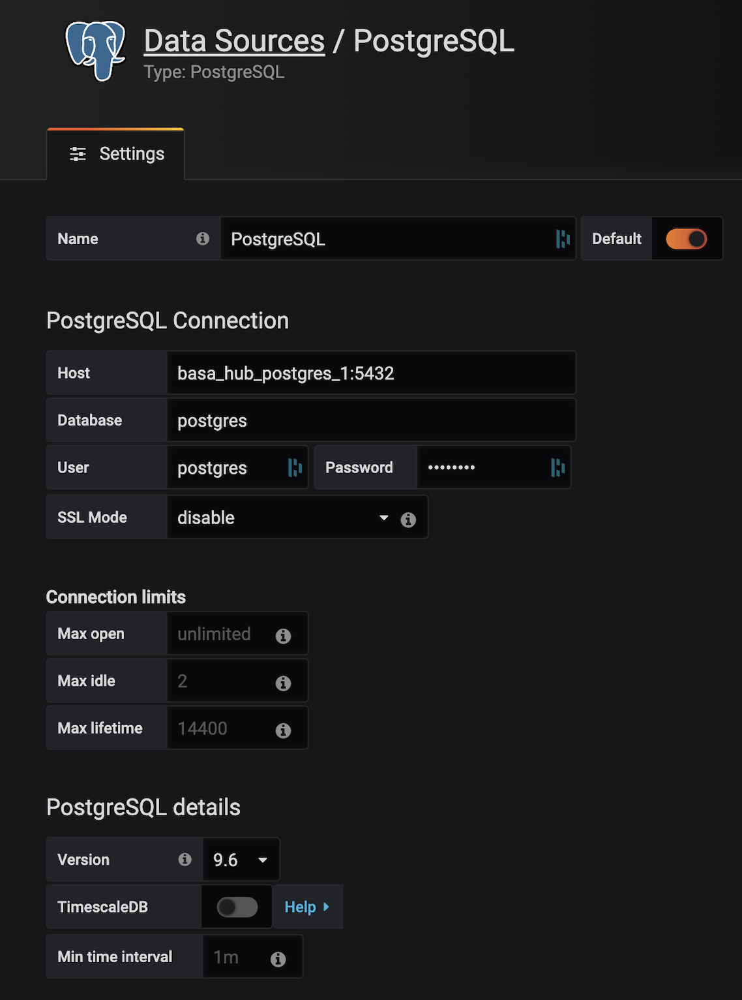

Pour ce TP, utiliser la branch 8_starting_monitoring
git checkout 8_starting_monitoring
Sur cette branche, il y a maintenant :
formation_indus_ds_avancee/monitoring.py qui contient 2 fonctions monitor_with_io et monitortests/test_unit/test_monitoring.py qui test la fonction monitor_with_iodags/predict.py qui est en charge d'excécuter le monitoring.Dans le fichier formation_indus_ds_avancee/monitoring.py, créer une fonction monitor qui retournera la valeur de votre choix à monitorer. Cette valeur sera enregistrée dans la DB PostreSQL grâce à la fonction monitor_with_io associée à une tâche Airflow.
tests/test_unit/test_monitoring.py pour que il soit vert.Dans le fichier dags/config.py, définir la constante MONITORING_TABLE_NAME avec un nom unique différent de celui des autres participants. Cette table sera désormais alimentée par la tâche monitor d'Airflow.
La tâche monitor devrait s'exécuter. Il nous faut désormais créer un dashboard de suivi des valeurs renvoyées par notre fonction.
Nous souhaitons maintenant afficher nos valeurs monitorées dans Grafana à partir de la table postgreSQL.
9000 et se connecter avec l'identifiant admin et le mot de passe adminLa connexion à définir est la même pour l'ensemble des participants à la formation : cette tâche doit donc être réalisée en mob programming avec les formateurs.
Nous allons ajouter une Data Source de type postgreSQL et spécifier les paramètres suivants :

Note : Dans le cadre du TP, le paramètre
Host
sera communiqué par le formateur.
Il vous suffit de cliquer sur New dashboard > Add Query, et de spécifier la connexion et la table postgreSQL (personnelle) créées lors des étapes précédentes.